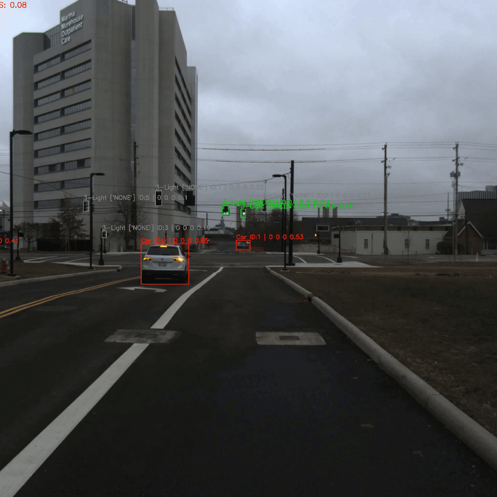
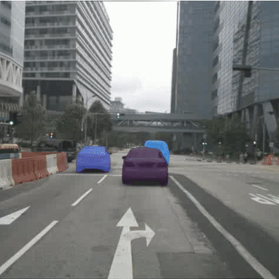
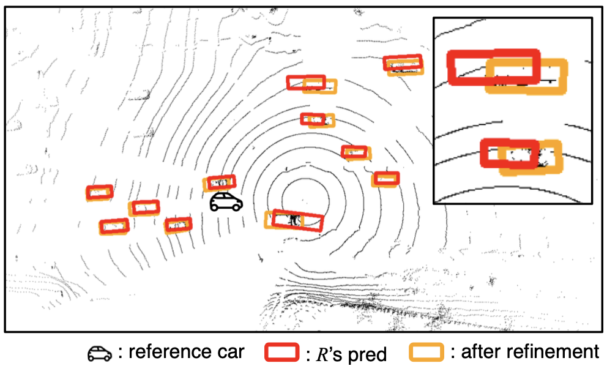
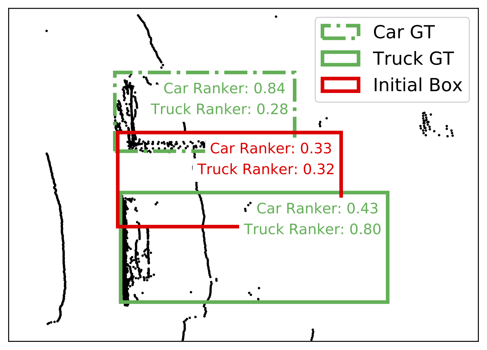
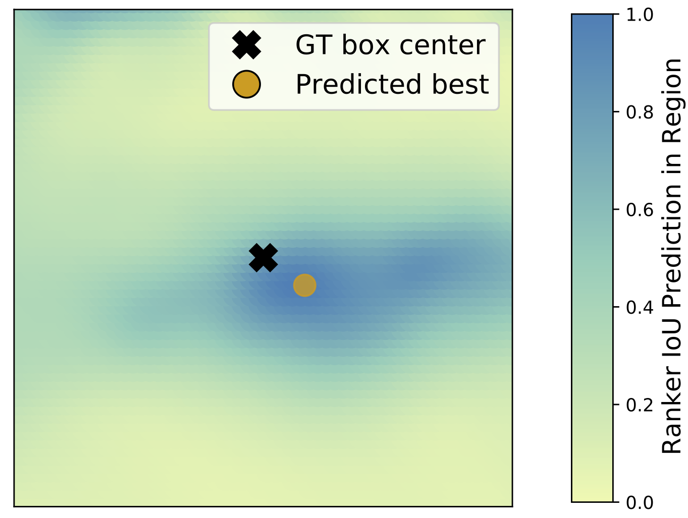

I'm a third/final year Computer Science undergrad in the Ohio State University. Currently I'm working under Dr. Wei-Lun Chao's lab focusing on computer vision, or more specifically, autonomous driving 🚗🚗🚗. I'm also a co-lead of Buckeye AutoDrive's perception team, responsible for handling perception logistics.
Projects
-

Buckeye AutoDrive
A four year program to achieve L4 autonomous driving vehicle.
-

Ongoing Projects 🛠️
Currently, I'm interested in the amazing tracking/object segmentation abilities of SAM 2, and trying to leverage its strength towards biology and autonomous driving fields.
Publications ✍️
Learning 3D Perception from Others' Predictions
Jinsu Yoo, Zhenyang Feng, Tai-Yu Pan, Yihong Sun, Cheng Perng Phoo, Xiangyu Chen, Mark Campbell, Kilian Q Weinberger, Bharath Hariharan, Wei-Lun Chao
International Conference on Learning Representations (ICLR), 2025 (Under Review)


